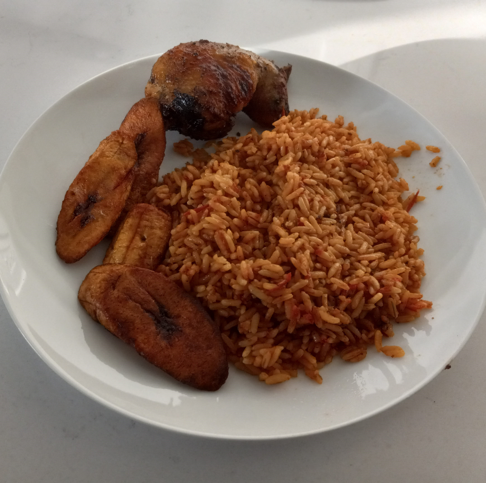
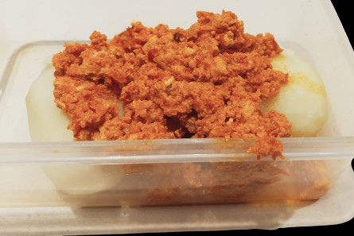
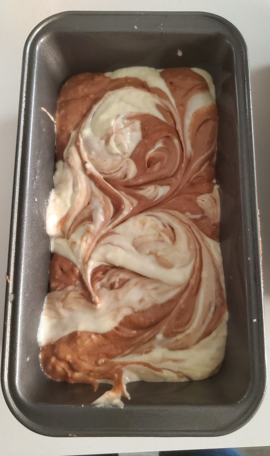
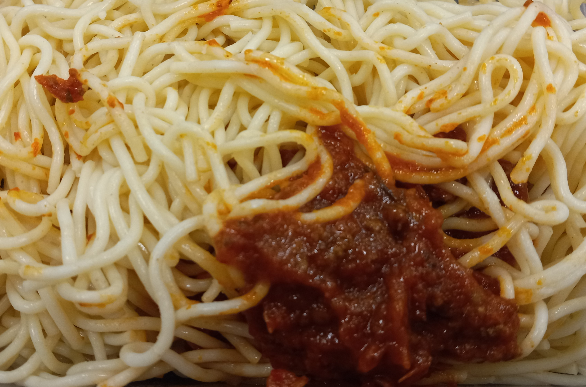

Different foods made by Vivian




A collection of recipes and anecdotes from the best cook in the world
On the dawn of the 1980s, in a univerisy hospital in Lagos, Nigeria a miracle happened. The best person the world has every seen was born. During her formative years, she would learn how to cook and later, give birth to two children with here loving husband. She moved to America in 2018, leaving behind her family and friends for the chance of a better life. Durng that time, Vivian endured many struggles but managed to survive. She never failed to bring a smile to her children's faces and entertain their very many hobbies. She always made sure to put food on the table, teaching all her recipes to her youngest daughter, Chizara. From bread, to soups, the pair experimented with ingredients in their new country. In 2020 her family moved to Canada, an even stranger country. She persevered and found new family there, creating new recipes with Canadian ingredients. Her youngest daughter has learnt all there's to be taught and is making meals of her own.
One of those children convinced her to share her recipes online. Wanting the world to have a taste of her delicous food, she started this blog.
Established in 2023, Vivians Kitchen aims to educate people on the joy of cooking. We seek to share our founder's delicious recipes with the rest of the world.No one should be left without good, homecooked meals.
We provide a variety of recipes from traditional Nigerian foods to complex pastries to fusion foods. Vivian's Kitchen is a complex library of all foods from the basic to the complex and most importantly, a comphrehensive look at cooking. We aim to teach the core of cooking and the creation of new recipes. Families with low-budgets We understand people are in different financial states and have accomodated for that in our recipes.
Above all, we want to teach the joy of creating and sharing food with family and friends.